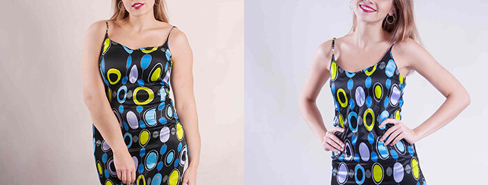

Mi ez? A jóga vagy az "akklimatizáció" mellékhatása? Hogyan adtam le a gyűlölt kilogrammokat és ismertem meg a fogyás csodálatos módszerét
Emily Fischer önmagát keresve utazott Balira, majd pedig egy egyedülálló fogyókúrás recepttel tért vissza
Valamikor régen megnéztem egy filmet Julia Roberts főszereplésével — "Ízek. Imák. Szerelmek". Emlékszem, hogy akkor nagyon inspirált a hősnő története. Rögtön másnap én is szerettem volna összepakolni a cuccomat és elutazni. De tudtam, hogy ezt több okból is lehetetlen megvalósítani.
Először is, a munkahelyemről senki sem engedne el több mint egy hétre. Másodszor, nem hagyhattam a 3 éves lányomat a férjemmel.
Azóta sok idő telt el és sok minden megváltozott. A pandémia miatt munkanélküli lettem. A férjemmel való kapcsolatom megszakadt amiatt, hogy éjjel-nappal össze voltunk zárva a lakásban. A válás logikus befejezés lett. Bánatomat tonnányi ételbe fojtottam, minek eredményeként mindössze pár hónap alatt 14 kg-t híztam.
Testsúlyom és belső állapotom stabilizálása érdekében jógáztam és meditáltam. Ezt követően az az ötletem támadt, hogy elutazom Balira egy jóga elvonulásra. És íme, néhány nap múlva, mint Julia Roberts, összepakoltam a csomagom, hogy elinduljak megtalálni önmagam. Szinte mantraként ismételtem a reklám szövegét:
Megszabadulás a mindennapi gondolatok rajától. Emlékezni az igazi énedre. Megismerni az igazi vágyakat.
Hittem, hogy az utazás után új szakasz kezdődik az életemben.
9 napos jóga elvonulás
Bali szigetébe első látásra beleszerettem. A nap melegen és élénken sütött. Mindenütt sok zöld volt és virágok virítottak. És ami a legfontosabb: minden ember mosolygott. Úgy tűnt, hogy a helyiek közül senkinek sincs problémája és mindannyian boldogok. Titokban reméltem, hogy én is megtanulom ezt.
A szervezők egy trópusi erdőben lévő villába vittek minket az elhagyatott Indonéz óceánhoz közel. Ideális hely a jógához és a meditációhoz. És boldogan szakadtam el a korábbi életemmel kapcsolatos gondolatoktól és koncentráltam a jelen pillanatra
Reggel hajnalban keltünk és vártuk a napfelkeltét, gyakorlatozva és meditálva. Aztán voltak előadások és naplementekor újra jógázás. Élveztem a hihetetlen érzést, amikor nem kell sietni sehova, figyelni lehet a természetet és hallgatni a belső csendet. Az utazás előtt azt gondoltam, hogy túl sok gyakorlat van, de már a villában rájöttem, milyen nagyszerű sokat gyakorolni.
A visszavonulás során nem használtuk telefonjainkat és nem férhettünk hozzá az internethez. Ráadásul egyáltalán nem gondolkodtunk a főzésen — egész nap egészséges vegetáriánus ételekkel etettek bennünket. Apropó étel.
A táplálkozás metamorfózisai
Általában a mindennapi életben eszem húst. De úgy döntöttem, nem rúgom fel az elvonulás szabályait.
Gondoltam, érdekes kísérlet lesz. És ha megtetszik és igazi vegetáriánus leszek.
Egyszóval, a villában nem volt hús. Rizset, halat, gyümölcsöt, zöldséget, levest és még sok mást ettünk. Idővel változásokat vettem észre az emésztésemben. Valamint a ruháimon is észrevehető volt, hogy elkezdtem fogyni. Először azt hittem, hogy a vegetáriánus menü miatt van, de nem. Később felfedem az összes kártyámat.
Egyelőre pedig meg akarom osztani a naplóm részleteit, amelyet az elvonulás idején vezettem:
1. nap Sárga rizs volt ebédre. Gyanítom, hogy ez valamilyen fűszer miatt van.
3. nap Úgy tűnik, hogy a helyi étrend a javamat szolgálja. Az étel gyorsabban kezdett megemésztődni és elmúlt a haspuffadás. Hiányzik a csokoládé.
5. nap Már 5 napja nem ettem húst és csokoládét, de még több energiám van, mint korábban. Egyáltalán nem érzem magam éhesnek és nem kívánom a káros ételeket.
9. nap A rövidnadrág, amiben jöttem, leesik rólam! A derekam 5 centiméterrel keskenyebb lett! Jó, hogy legalább van ruhám. Úgy érzem, mintha egészségtől és energiától ragyognék belülről.
A fogyás az elvonulás váratlan bónuszává vált (és nem csak számomra). És nagyon szerettem volna otthon is ugyanabban a szellemben folytatni. De ehhez rá kellett jönnöm, miért épp az elvonulás ideje alatt fogytam ilyen sokat. Hiszen otthon különböző diétákon voltam és sportoltam, de legjobb esetben 2 kg-t adtam le egy hónap alatt. Aztán pedig a súly gyorsan visszatért.
A fogyás titka Balin
Mint kiderült, ennek oka nem a vegetáriánus étrend volt. Honnan jöttem rá erre?
A csoportunkban volt Amanda, aki sok fűszerre allergiás. A szakács kifejezetten az ő számára főzött ételeket fűszerek nélkül. Vagyis ő is ugyanolyan vegetáriánus ételeket kapott, mint mi, de fűszerek nélkül. A csoport többi tagjához képest ő egyáltalán nem fogyott. Amilyen volt a testsúlya, úgy is ment haza.
Már otthon jöttem rá: a fűszer volt az oka. Elkezdtem olvasni arról, milyen fűszereket használnak Balin és így jutottam el a kurkumáig! Tehát ezért volt szinte minden étel sárga színű!
Kiderült, hogy a kurkuma jó hatással van az emésztésre és az anyagcserére. Képes csökkenteni az édes és zsíros ételek szükségét, növelni az immunitást. Segít megtisztítani a testet a toxinoktól és a salakanyagoktól. Ezen túlmenően ez a fűszer javítja a vérkeringést, ami hozzájárul az egyenletesebb és egészségesebb arcszínhez, a fiatalításhoz, a finom ráncok kisimításához, a duzzanatok enyhítéséhez és a bőr világosabbá tételéhez.
Rájöttek a kurkuma sajátosságaira is:
- nem szabad éhgyomorra enni, mert a hasnyálmirigy megszenvedi;
- lehetséges mellékhatások: hasmenés, alacsony vérnyomás;
- ahhoz, hogy a kurkuma jobban felszívódjon, gyömbérrel és fekete borssal kell szedni.
A fogyás érdekében tanácsos naponta 1-2 teáskanállal enni belőle. Plusz, célszerű még gyömbért és fekete borsot hozzáadni. Ez nem mindig volt kényelmes, különösen a munkahelyen vagy nyaralás közben. Sok különböző edényt kellett magammal hordani, mindent kimérni és összekeverni.
Egyszer pedig túlzásba vittem az adagolást és szörnyű gyomorrontásom lett. Akkor eldöntöttem, hogy keresek egy professzionális fogyókúrás szert ugyanolyan összetétellel. A keresés nem tartott sokáig — rátaláltam a szerre.

Ezek a kapszulák csak kurkumából, gyömbérből és fekete borsból állnak. Minden a fogyáshoz megfelelő arányban.
Én a szert 1 kapszulájával szedtem naponta 3 alkalommal étkezés közben. Elmondhatom, hogy ez sokban megkönnyítette a feladatom — fűszerek összekeverése helyett, most csak megiszom a kapszulát. Ami a hatást illeti, még jobb, mint korábban. Reggel feltöltődve és energiával telve ébredek, az arcom jobban néz ki, egész télen nem voltam beteg.
Ami a fogyást illeti, a néhány heti szedése alatt 9 kg-t fogytam! Ugyanakkor csak egy kicsit gondoltam át az étrendemet és kétszer hetente jógázom. Most a súlyom még kevesebb, mint a karantén előtt.
Visszatekintve azt mondhatom, hogy az utazásom nem volt rosszabb, mint Julia Robertsé. Azért utaztam Balira, hogy kikapcsolódjak, megtaláljam önmagam és új életet kezdjek. Sikerült elérnem ezeket a célokat, sőt még többet is — végre lefogytam! Az elvonulás után munkát is sikerült találnom. Már csak az maradt, hogy megtaláljam a páromat.
Katarina Richter, fogyókúrás és táplálkozási szakember. Munkatapasztalat — 13 év
Katarina Richterhez, fogyókúrás és táplálkozási szakemberhez fordultunk, hogy kommentálja ezt:
— Tényleg kevesen tudják, de a kurkuma rengeteg hasznos tulajdonsággal rendelkezik, valamint pozitív hatással van a fogyás folyamatára.
A kurkuma a következő módon segít a fogyásban:
- képes felgyorsítani az anyagcsere folyamatokat;
- megakadályozhatja a felesleges zsír felszívódását a gyomorban;
- eltávolíthatja a zsírokat, amelyek még fel nem szívódtak a szervezetben;
- segít a zsírréteg elleni küzdelemben;
- segít feloldani a káros koleszterint és eltávolítani ezt a szervezetből;
- elősegíti a belek gyorsabb megtisztulását a méreganyagoktól és a káros nyáktól;
- képes javítani az epehólyag működését;
- segít eltávolítani a bélből és a májból a bomlástermékeket;
- elősegíti a belső szervek fertőtlenítését;
- normalizálhatja az emésztési folyamatokat;
- harcol a gyulladásos folyamatokkal.
Amikor a testünk nem küzd a gyulladásokkal, könnyebb a fogyásra összpontosítania.
Fontos figyelembe venni azt is, hogy a kurkumin, a kurkuma fő hatóanyaga, rosszul szívódik fel a véráramban. Ezért a szakértők azt javasolják, hogy fekete borssal kombinálva használják, amely piperint tartalmaz — egy természetes anyagot, amely növeli a kurkumin felszívódását.
A egyedisége abban áll, hogy nemcsak kurkumát, fekete borsot, hanem gyömbért is tartalmaz. Minden összetevő tökéletes arányban van, ami segít megelőzni a mellékhatásokat. A ilyen összetételének köszönhetően a súly kétszer olyan gyorsan csökkenhet.
A gyömbér gyorsítja a zsírégetést, csökkenti a gyulladást és maximálisan fokozza az anyagcserét. Azok véleményei, akik lefogytak, bizonyítják, hogy jóllakottság érzetét kelti, védelmet nyújt a nassolás ellen. A segítségével akár 10 kg-ot is lehet fogyni egy hónap alatt.
Hatékonyságát bizonyítja az a felmérés is, amelyet a forgalmazó 657 különböző korú és súlyú vásárló körében végzett. A feltételek szerint a válaszadók legalább 30 napig szedték a szert. A kapott adatok alapján statisztikákat állítottak össze:
— Megvásárolható a gyógyszertárban?
— Egészen a közelmúltig a szer kapható volt a gyógyszertárakban, de gyakorivá váltak a hamisítási esetek, ezért a forgalmazó úgy döntött, felhagy az értékesítés ezen módjával.
Jelenleg a csak online vásárolható meg. A vásárlók ösztönzése érdekében a forgalmazó úgy döntött, hogy egyszeri AKCIÓT bonyolít le, ezért most 50% kedvezménnyel vásárolható meg.
Ehhez szükséges:
- Az EU területén élni.
- Kitölteni az alábbi megrendelőlapot -ig (bezárólag), amíg a termék raktáron van.
- Válaszolni az operátor hívására.
- Átvenni és kifizetni a csomagot a legközelebbi postahivatalban.
Remélem, hogy a segíthet a túlsúlyos embereknek elérni a régóta várt karcsúságot!
FIGYELEM: A forgalmazó akcióján belül a 50% kedvezménnyel vásárolható meg. Ehhez ki kell töltenie az alábbi megrendelőlapot -ig (bezárólag). Az akciós termékek száma korlátozott.
Naponta szedem a szert. Az emésztésem javult, a súlyom csökkent. Sokkal energikusabbá váltam.
Érdekes volt elolvasni, köszönöm!
Hogyan rendelhető meg? Nem értem
Töltse ki a fenti megrendelőlapot, visszahívják
A kurkumát nem fogyás céljából, hanem az immunitás megerősítésére szedtem télen. Egész télen egyszer sem voltam beteg, habár a munkahelyen mindenki beteg volt. Segített abban is, hogy megbirkózzak a térd fájdalommal. És egy kicsit lefogytam
Néha beleteszem a kurkumát különböző ételekbe, de nem tudtam, hogy még fogyni is lehet tőle
Korábban én tettem bele tiszta kurkumát, de gyakran elfelejtkeztem róla. A szedése sokkal egyszerűbb és hatása egyértelműen erősebb. Itt van az eredményem 2 hét alatt:

Hűha! Nekem is meg kell rendelni, amíg van kedvezmény és nem kapkodták el.
Inspiráló történet! Én is álmodom egy jóga elvonulásról
A sport és a diéta nem nekem való — nem tudom rászedni magam. Beszedtem a szert és elértem az áhított súlyt! Mínusz 9 kg, mintha nem is lett volna. A szekrényben sok ruhát kell lecserélni, de ez nem probléma. A legfontosabb dolog, hogy sikerült lefogyni!
Férfiak számára alkalmas ez a szer vagy csak nőknek van?
Férfiak számára is alkalmas. A férjemmel együtt szedtük, 6 kg-ot fogyott.
A csomag nagyon gyorsan megérkezett, később elmondom, hogy segített-e vagy sem.
2 évet éltem Ázsiában, ott tényleg mindenki nagyon szereti a kurkumát és náluk szinte nincsenek kövér emberek. De az arányokkal tényleg jobb, ha nem kísérletezünk — úgy gondolom, fogyáshoz még mindig jobb szert szedni.